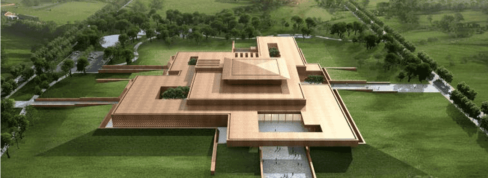

实时更新森泰最新资讯
Real time update of Sentai's latest consultation
上传时间:2019年05月17日
2019年5月17日，二里头夏都遗址博物馆智慧化信息平台项目的承接单位尘埃落定，北京森泰英睿传媒科技有限公司获此殊荣。
二里头夏都遗址博物馆项目占地208亩，建设规模3.1万平方米，总投资6.3亿元，计划于2019年10月建成，届时将成为全国大遗址保护、展示和利用的示范区，中国早期国家形成和发展研究展示中心，夏商周断代工程和中华文明探源工程研究、展示基地，在文博行业具有里程碑式的的意义。
此时二里头遗址博物馆智慧化信息平台包括：云服务平台/数字资源综合管理平台/文化智慧化管理系统/综合业务协同管理系统/智慧票务管理系统/智慧导览系统等系统的系统集成及硬件安装。智慧化平台搭建完成以后，将向公众提供智慧化的公共服务。
二里头遗址博物馆智慧化信息平台，将充分利用物联网/云计算/大数据/移动互联/人工智能等信息技术，通过对遗址和文物信息的数字化采集/加工/存储/管理和利用，实现文物数据的永久保存和多样化应用；通过公众信息的采集/应用和大数据分析，为公众提供线上线下多渠道的服务平台，公众能够方便快捷/优质高效地获取文物相关的知识，使文化历史信息的传播效能最大化。从而充分实现博物馆科学研究/社会教育/公众服务的职能。
首页
解决方案
经典案例
新闻资讯
关于我们

400-000-0000

systek@126.com